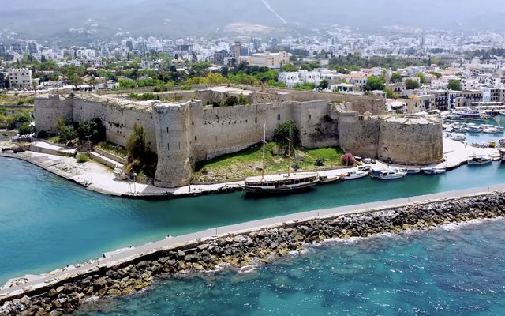

اليوم الأول: جامع السليمية والخان الكبير والتكية المولوية في نيقوسيا المسوّرة، ثم إلى كيرينيا لزيارة دير بيلاپايس وقلعة القديس هيلاريون وقلعة كيرينيا عند الغروب. واليوم الثاني لفاماغوستا: سلاميس والمقابر الملكية ودير القديس برنابا وإنكومي، ثم قلعة عطيل وجامع لالا مصطفى باشا في المدينة المسوّرة.
اليوم 1

يرتفع جامع السليمية في قلب المدينة القديمة المسوّرة في ليفكوشا (نيقوسيا).

يقع متحف اللابيداري بجوار جامع السليمية في ليفكوشا، في مبنى حجري من طابقين يعود إلى القرن الخامس عشر.

الخان الكبير (بيوك خان) في المدينة القديمة بليفكوشا خان للقوافل من طابقين، بناه عام 1572 لالا مصطفى باشا أول والٍ عثماني على الجزيرة.

يقع متحف التكية المولوية قرب بوابة كيرينيا في ليفكوشا، في مباني تكية مولوية أُسست في القرن السابع عشر.

قصر درويش باشا في حي عرب أحمد بليفكوشا بيت عثماني من القرن التاسع عشر من طابقين، مبني من الحجر والخشب.

يقع دير بيلاپايس على مصطبة تطل على البحر في قرية بيلربيي جنوب شرق غيرنه، عند سفح جبال بشبارماك.

قلعة القديس هيلاريون، غرب غيرنه على قمة وعرة من جبال بشبارماك بارتفاع نحو 730 مترًا، من أشهر قلاع قبرص بهيئتها الخيالية المندمجة مع الصخر.

ترتفع قلعة غيرنه (كيرينيا) عند الطرف الشرقي للميناء التاريخي.
اليوم 2

تقع سلاميس على بعد نحو 8 كم شمال غازي ماغوسا (فاماغوستا) بين الكثبان وأشجار الصنوبر على شاطئ البحر، وهي من أكبر المدن القديمة في قبرص.
المقابر الملكية غرب سلاميس القديمة هي مقبرة النخبة في المدينة من القرنين الثامن والسابع قبل الميلاد.

يحمل دير القديس برنابا قرب سلاميس اسم الرسول برنابا الذي يُعدّ مؤسس كنيسة قبرص.

يضم موقع إنكومي (ألاسيا) قرب قرية توزلا بقايا إحدى أهم مدن العصر البرونزي المتأخر في قبرص.

قلعة عطيل حصن داخلي بُني لحماية الميناء في حي قلعة إيتشي المسوّر في غازي ماغوسا (فاماغوستا).

جامع لالا مصطفى باشا هو رمز المدينة المسوّرة في غازي ماغوسا.

زنزانة ومتحف نامق كمال في المدينة المسوّرة بغازي ماغوسا هي المكان الذي نُفي إليه «شاعر الوطن» نامق كمال بعد عرض مسرحيته «الوطن أو سيليسترة» عام 1873.
مسارات جاهزة مرتبة يومًا بيوم لمساعدتك في التخطيط. المدد تقريبية؛ تحقق من مواعيد الزيارة وحالة الطرق قبل السفر.